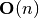

10.2.2. COBOL Loader Module – Parse COBOL Source to Load a Schema¶
Parsing a spreadsheet schema is relatively easy: see Schema Loader Module – Load Embedded or External Schema. Parsing a COBOL schema, however, is a bit more complex.
Two of the three problems associated with COBOL are solved in The COBOL Package. What remains is parsing the COBOL source to extract a schema.
A new schema.loader.ExternalSchemaLoader subclass is required to parse the DDE sublanguage of COBOL. This loader will build the hierarchical DDE from the COBOL source, decorate this with size and offset information, then flatten it into a simple schema.Schema instance.
10.2.2.1. Load A Schema Use Case¶
The goal of use case is to load a schema encoded in COBOL. This breaks down into two steps.
- Parse the COBOL “copybook” source file.
- Produce a schema.Schema instance that can be used to access data in a COBOL file.
Ideally, this will look something like the following.
with open("sample/zipcty.cob", "r") as cobol:
schema= stingray.cobol.loader.COBOLSchemaLoader( cobol ).load()
#pprint.pprint( schema )
for filename in 'sample/zipcty1', 'sample/zipcty2':
with stingray.cobol.Character_File( filename, schema=schema ) as wb:
sheet= wb.sheet( filename )
counts= process_sheet( sheet )
pprint.pprint( counts )
Step 1 is to open the COBOL DDE “copybook” file, zipcty.cob that defines the layout. We build the schema using a cobol.loader.COBOLSchemaLoader.
Step 2 is to open the source data, zipcty1 with the data. We’ve made a sheet.Sheet from the file: the sheet’s name is "zipcty1", the the schema is the external provided when we opened the cobol.Character_File.
Once the sheet is available, we can then run some function, process_sheet, on the sheet. This will use the sheet.Sheet API to process rows and cells of the sheet. Each piece of source data is loaded as a kind of cell.Cell.
We can then use appropriate conversions to recover Python objects. This leads us to the second use case.
Here’s what a process_sheet() function might look like in this context.
def process_sheet( sheet ):
schema_dict= dict( (a.name, a) for a in sheet.schema )
schema_dict.update( dict( (a.path, a) for a in sheet.schema ) )
counts= { 'read': 0 }
row_iter= sheet.rows()
header= header_builder( next(row_iter), schema_dict )
print( header )
for row in row_iter:
detail= row_builder( row, schema_dict )
print( detail )
counts['read'] += 1
return counts
First, we’ve build two versions of the schema, indexed by low-level item name and the full path to an item. In some cases, the low-level DDE items are unique, and the paths are not required. In other cases, the paths are required.
We’ve initialized some record counts, always a good practice.
We’ve fetched the first record and used some function named header_builder() to transform the record into a header, which we print.
We’ve fetched all other records and used a function named row_builder() to transform every following record into details, which we also print.
This shows a physical head-tail processing. In some cases, there’s an attribute which differentiates headers, body and trailers.
10.2.2.2. Use A Schema Use Case¶
The goal of this use case is to build usable Python objects from the source file data.
For each row, there’s a two-step operation.
- Access elements of each row using the COBOL DDE structure.
- Build Python objects from the Cells found in the row.
Generally, we must use lazy evaluation as shown in this example:
def header_builder(row, schema):
return dict(
file_version_year= row.cell(schema['FILE-VERSION-YEAR']).to_str(),
file_version_month= row.cell(schema['FILE-VERSION-MONTH']).to_str(),
copyright_symbol= row.cell(schema['COPYRIGHT-SYMBOL']).to_str(),
tape_sequence_no= row.cell(schema['TAPE-SEQUENCE-NO']).to_str(),
)
def row_builder(row, schema):
return dict(
zip_code= row.cell(schema['ZIP-CODE']).to_str(),
update_key_no= row.cell(schema['UPDATE-KEY-NO']).to_str(),
low_sector= row.cell(schema['COUNTY-CROSS-REFERENCE-RECORD.ZIP-ADD-ON-RANGE.ZIP-ADD-ON-LOW-NO.ZIP-SECTOR-NO']).to_str(),
low_segment= row.cell(schema['COUNTY-CROSS-REFERENCE-RECORD.ZIP-ADD-ON-RANGE.ZIP-ADD-ON-LOW-NO.ZIP-SEGMENT-NO']).to_str(),
high_sector= row.cell(schema['COUNTY-CROSS-REFERENCE-RECORD.ZIP-ADD-ON-RANGE.ZIP-ADD-ON-HIGH-NO.ZIP-SECTOR-NO']).to_str(),
high_segment= row.cell(schema['COUNTY-CROSS-REFERENCE-RECORD.ZIP-ADD-ON-RANGE.ZIP-ADD-ON-HIGH-NO.ZIP-SEGMENT-NO']).to_str(),
state_abbrev= row.cell(schema['STATE-ABBREV']).to_str(),
county_no= row.cell(schema['COUNTY-NO']).to_str(),
county_name= row.cell(schema['COUNTY-NAME']).to_str(),
)
Each cell is accessed in a three-step operation.
- Get the schema information via schema['shortname'] or schema['full.path.name']
- Build the Cell using the schema information via row.cell(...).
- Convert the Cell to our target type via ...to_str().
We must do this in steps because the COBOL records may have invalid fields, or REDEFINES or OCCURS DEPENDING ON clauses.
If we want to build higher-level, pure Python objects associated with some application, we’ll do this.
def build_object(row, schema):
return Object( **row_builder(row, schema) )
We’ll simply assure that the row’s dictionary keys are the proper keyword arguments for our application class definitions.
When we have indexing to do, this is only slightly more complex. The resulting object will be a list-of-list structure, and we apply the indexes in the order from the original DDE definition to pick apart the lists.
10.2.2.3. Extensions and Special Cases¶
The typical use cases is something like the following:
with open("sample/zipcty.cob", "r") as cobol:
schema= stingray.cobol.loader.COBOLSchemaLoader( cobol ).load()
with stingray.cobol.Character_File( filename, schema=schema ) as wb:
sheet= wb.sheet( filename )
for row in sheet.rows():
dump( schema, row )
This will use the default parsing to create a schema from a DDA and process a file, dumping each record.
There are two common extension:
- new lexical scanner, and
- different ODO handling.
To change lexical scanners, we create a new subclass of the parser.
We use this by subclassing cobol.COBOLSchemaLoader.
class MySchemaLoader( cobol.COBOLSchemaLoader ):
lexer_class= cobol.loader.Lexer_Long_Lines
This will use a different lexical scanner when parsing a DDE file.
We may also need to change the record factory. This involves two separate extensions. We must extend the cobol.loader.RecordFactory to change the features. Then we can extend cobol.loader.COBOLSchemaLoader to use this record factory.
class ExtendedRecordFactory( cobol.loader.RecordFactory ):
occurs_dependingon_class= stingray.cobol.defs.OccursDependingOnLimit
#Default is occurs_dependingon_class= stingray.cobol.defs.OccursDependingOn
class MySchemaLoader( cobol.loader.COBOLSchemaLoader ):
record_factory_class= ExtendedRecordFactory
This will use a different record factory to elaborate the details of the DDE.
10.2.2.4. Design¶
A DDE contains a recursive definition of a COBOL group-level DDE. There are two basic species of COBOL DDE’s: elemetary items, which have a PICTURE clause, and group-level items, which contain lower-level items. There are several optional features of every DDE, including an OCCURS clause and a REDEFINES clause. In addition to the required picture clause, elementary items have an optional USAGE clause, and optional SIGN clause.
The PICTURE clause specifies how to interpret a sequence of bytes. The picture clause interacts with the optional USAGE clause, SIGN clause and SYNCHRONIZED clause to fully define the encoding. The picture clause uses a complex format of code characters to define either individual character bytes (when the usage is display) or pairs of decimal digit bytes (when the usage is COMP-3).
The OCCURS clause specifies an array of elements. If the occurs clause appears on a group level item, the sub-record is repeated. If the occurs clause appears on an elementary item, that item is repeated.
An occurs depending on (ODO) makes the positions of each field dependent on actual data present in the record. This is a rare, but necessary complication.
The REDEFINES clause defines an alias for input bytes. When some field R redefines a previously defined field F, the storage bytes are used for both R and F. The record structure itself does not provide a way to disambiguate the interpretation of the bytes. Program logic must be examined to determine the conditions under which each interpretation is valid. It’s entirely possible either interpretation has invalid fields.
10.2.2.4.1. DDE Class¶
The parent class, DDE, defines the features of a group-level item. It supports the occurs and redefines features. It can contain a number of DDE items. The leaves of the tree define the features of an elementary item.
We could have a class hierarchy with group and elementary subclasses. The group level item could have a container for lower level items. The elementary class definition could add support for the picture clause, but remove the container for lower-level items.
On balance, it seems simpler to have one generic DDE node class and use optional fields than to create a proper subclass. There isn’t a good reason for this. An if statement to look for an optional picture-clause is fairly rare.
The various optional clauses are handled using a variety of design patterns. The usage information, for instance, is used to create a Strategy object that is used to extract a field from a record’s bytes.
The redefines information is used to create a Strategy object that computes the offset to a field. There are two variant strategies: locate the basis field and use that field’s offset or use the end of the previous element as the offset.
This is further compounded by the Occurs Depending On (ODO) calculation which cannot be done statically or eagerly, but must be done dynamically and lazily based on live data.
10.2.2.4.2. DDE Post-processing¶
We have a number of functions to traverse a DDE structure to write reports on the structure. The DDE has an __iter__() method which provides a complete pre-order depth-first traversal of the record structure.
Here are some functions which traverse the entire DDE structure.
- cobol.defs.report() reports on the DDE structure.
- cobol.defs.source() shows canonical source.
- cobol.defs.search() locates a name in DDE structure.
- cobol.defs.resolver() does name resolution throughout the DDE structure.
- cobol.defs.setDimensionality() walks up the hierarchy from each node to compute the net occurrences based on all parent OCCURS clauses.
Once there is data available, we have these additional functions.
- cobol.defs.setSizeAndOffset() computes the offset and size of each element.
- cobol.dump() dumps a record showing the original DDE and the values.
Note that cobol.defs.setSizeAndOffset() is recursive, not iterative. It needs to manage subtotals based on ascent and descent in the hierarchy.
10.2.2.4.3. DDE Parser¶
A cobol.loader.RecordFactory object reads a file of text and either creates a DDE or raises an exception. If the text is a valid COBOL record definition, a DDE is created. If there are syntax errors, an exception is raised.
The cobol.loader.RecordFactory depends on a cobol.loader.Lexer instance to do lexical scanning of COBOL source. The lexical scanner can be subclassed to pre-process COBOL source. This is necessary because of the variety of source formats that are permitted. Shop standards may include or exclude features like program identification, line numbers, format control and other decoration of the input.
The cobol.loader.RecordFactory.makeRecord() method does the parsing of the record definition. Each individual DDE statement is parsed. The level number information is used to define the correct grouping of elements. When the structure(s) is parsed, it is decorated with size and offset information for each element.
Note that multiple 01 levels are possible in a single COBOL copybook. This is confusing and potentially complicated, but it occurs IRL.
10.2.2.4.4. Field Values¶
The COBOL language, and IBM’s extensions, provide for a number of usage options. In this application, three basic types of usage strategies are supported:
- DISPLAY. These are bytes, one per character, described by the picture clause. They can be EBCDIC or ASCII. We use the codecs module to convert EBCDIC characters to Unicode for further processing.
- COMP. These are binary fields of 2, 4 or 8 bytes, with the size implied by the picture clause.
- COMP-3. These are packed decimal fields, with the size derived from the picture clause; there are two digits packed into each byte, with an extra half-byte for a sign.
These require different strategies for decoding the input bytes.
Additional types include COMP-1 and COMP-2 which are single- and double-precision floating-point. They’re rare enough that we ignore them.
10.2.2.4.5. Additional Requirements¶
Support for Occurs Depending On is based several features of COBOL.
The syntax for ODO is more complex: OCCURS [int TO] int [TIMES] DEPENDING [ON] name. Compare this with simple OCCURS int [TIMES].
This leads to variable byte positions for data items which follow the occurs clause, based on the name value.
This means that the offset is not necessarily fixed when there’s a complex ODO. We’ll have to make offset (and size) a property that has one of two strategies.
- Statically Located. The base case where offsets are static.
- Variably Located. The complex ODO situation where there’s an ODO in the record. All ODO “depends on” fields become part of the offset calculation. This means we need an index for depends on clauses.
The technical buzzphrase is “a data item following, but not subordinate to, a variable-length table in the same level-01 record.”
These are the “Appendix D, Complex ODO” rules.
The design consequences are these.
There are three species of relationships between DDE elements: Predecessor/Successor, Parent/Child (or Group/Elementary), and Redefines. Currently, the pred/succ relationship is implied by the parent having a sequence of children. We can’t easily find a predecessor without a horrible  search.
There are two strategies for doing offset/size calculations.
Statically Located. The cobol.defs.setSizeAndOffset() function can be used once, right after the schema is parsed.
Variably Located. The calculation of size and offset is based on live data. The cobol.defs.setSizeAndOffset() function must be used after the row is fetched but before any other processing.
This is done automagically by a sheet.LazyRow object.
The offset calculation can be seen as a recursive trip “up” the tree following redefines, predecessor and parent relationships (in that order) to calculate the size of everything prior to the element in question. We could make offset and total size into properties which do this recursive calculation.
The “size” of a elementary items is still simply based on the picture. For group items, however, size becomes based on total size which in turn, may be based on ODO data.
Todo
88-level items could create boolean-valued properties.
10.2.2.4.6. Model¶
http://yuml.me/diagram/scruffy;/class/
#cobol_loader,
[Schema]<>-[RepeatingAttribute],
[SchemaLoader]-builds->[Schema],
[SchemaLoader]^[COBOLSchemaLoader],
[COBOLSchemaLoader]->[Lexer],
[COBOLSchemaLoader]->[RecordFactory],
[RecordFactory]<>-[DDE].
10.2.2.5. Overheads¶
Ultimately, we’re writing a new schema.loader.ExternalSchemaLoader. The purpose of this is to build a schema.Schema instance from COBOL source instead of some other source.
"""stingray.cobol.loader -- Parse a COBOL DDE and build a usable Schema."""
import re
from collections import namedtuple, Iterator
import logging
import weakref
import warnings
import stingray.schema.loader
import stingray.cobol
import stingray.cobol.defs
A module-level logger.
logger= logging.getLogger( __name__ )
10.2.2.6. Parsing Exceptions¶
- class cobol.loader.SyntaxError¶
These are compilation problems. We have syntax which is utterly baffling.
class SyntaxError( Exception ):
"""COBOL syntax error."""
pass
10.2.2.7. Picture Clause Parsing¶
Picture clause parsing is done as the DDE element is created. Not for a great reason. It’s derived data from the source picture clause.
It could be done in the parser, also.
- class cobol.loader.Picture¶
Final: the final picture Alpha: boolean; True if any "X" or "A"; False if all "9" and related Length: length of the final picture Scale: count of "P" positions, often zero Precision: digits to the right of the decimal point Signed: boolean; True if any "S", "-" or related Decimal: "." or "V" or None
Picture = namedtuple( 'Picture',
'final, alpha, length, scale, precision, signed, decimal' )
- cobol.loader.picture_parser(pic)¶
def picture_parser( pic ):
"""Rewrite a picture clause to eliminate ()'s, S's, V's, P's, etc.
:param pic: Sounce text.
:returns: Picture instance.
"""
out= []
scale, precision, signed, decimal = 0, 0, False, None
char_iter= iter(pic)
for c in char_iter:
if c in ('A','B','X','Z','9','0','/',',','+','-','*','$'):
out.append( c )
if decimal: precision += 1
elif c == 'D':
nc= next(char_iter)
assert nc == "B", "picture error in {0!r}".format(pic)
out.append( "DB" )
signed= True
elif c == 'C':
nc= next(char_iter)
assert nc == "R", "picture error in {0!r}".format(pic)
out.append( "CR" )
signed= True
elif c == '(':
irpt= 0
try:
for c in char_iter:
if c == ')': break
irpt = 10*irpt + int( c )
except ValueError as e:
raise SyntaxError( "picture error in {0!r}".format(pic) )
assert c == ')', "picture error in {0!r}".format(pic)
out.append( (irpt-1)*out[-1] )
elif c == 'S':
# silently drop an "S".
# Note that 'S' plus a SIGN SEPARATE option increases the size of the picture!
signed= True
elif c == 'P':
# "P" sets scale and isn't represented.
scale += 1
elif c == "V":
# "V" sets precision and isn't represented.
decimal= "V"
elif c == ".":
decimal= "."
out.append( "." )
else:
raise SyntaxError( "Picture error in {!r}".format(pic) )
final= "".join( out )
alpha= ('A' in final) or ('X' in final) or ('/' in final)
logger.debug( "PIC {0} {1} {2} {3} {4}".format(pic, final, alpha, scale, precision) )
# Note: Actual bytes consumed depends on len(final) and usage!
return Picture( final, alpha, len(final), scale,
precision, signed, decimal)
10.2.2.8. Lexical Scanning¶
The lexical scanner can be subclassed to extend its capability. The default lexical scanner provides a Lexer.clean() method that simply removes comments. This may need to be overridden to remove line numbers (from positions 72-80), module identification (from positions 1-5), and format control directives.
- class cobol.loader.Lexer¶
Basic lexer that simply removes comments and the first six positions of each line.
class Lexer:
"""Lexical scanner for COBOL. Iterates over tokens in source text."""
separator= re.compile( r'[.,;]?\s' )
quote1= re.compile( r"'[^']*'" )
quote2= re.compile( r'"[^"]*"' )
def __init__( self, replacing=None ):
self.log= logging.getLogger( self.__class__.__qualname__ )
self.replacing= replacing or []
- Lexer.clean(line)¶
def clean( self, line ):
"""Default cleaner removes positions 0:6."""
return line[6:].rstrip()
- Lexer.scan(text)¶
def scan( self, text ):
"""Locate the next token in the input stream.
- Clean 6-char lead-in plus trailing whitespace
- Add one extra space to distinguish end-of-line ``'. '``
from picture clause.
"""
if isinstance(text, (str, bytes)):
text= text.splitlines()
self.all_lines= ( self.clean(line) + ' '
for line in text )
# Remove comments and blank lines
self.lines = ( line for line in self.all_lines
if line and line[0] not in ('*', '/') )
for line in self.lines:
logger.debug( line )
if len(line) == 0: continue
for old, new in self.replacing:
line= line.replace(old,new)
if self.replacing: logger.debug( line )
current= line.lstrip()
while current:
if current[0] == "'":
# apostrophe string, break on balancing apostrophe
match= self.quote1.match( current )
space= match.end()
elif current[0] == '"':
# quote string, break on balancing quote
match= self.quote2.match( current )
space= match.end()
else:
match= self.separator.search( current )
space= match.start()
if space == 0: # starts with separator
space= match.end()-1
token, current = current[:space], current[space:].lstrip()
self.log.debug( token )
yield token
- class cobol.loader.Lexer_Long_Lines¶
More sophisticated lexer that removes the first six positions of each line. If the line is over 72 positions, it also removes positions [71:80]. Since it’s an extension to cobol.loader.Lexer, it also removes comments.
class Lexer_Long_Lines( Lexer ):
def clean( self, line ):
"""Remove positions 72:80 and 0:6."""
if len(line) > 72:
return line[6:72].strip()
return line[6:].rstrip()
We use this by subclassing cobol.COBOLSchemaLoader.
class MySchemaLoader( cobol.COBOLSchemaLoader ):
lexer_class= cobol.Lexer_Long_Lines
10.2.2.9. Parsing¶
The cobol.loader.RecordFactory class is the parser for record definitions. The parser has three basic sets of methods:
- clause parsing methods,
- element parsing methods and
- complete record layout parsing.
Parsing a record layout involves parsing a sequence of elements and assembling them into a proper structure. Each element consists of a sequence of individual clauses.
The picture clauses are parsed separately by the DDE during its initialization.
- class cobol.loader.RecordFactory¶
class RecordFactory:
"""Parse a copybook, creating a DDE structure."""
noisewords= {"WHEN","IS","TIMES"}
keywords= {"BLANK","ZERO","ZEROS","ZEROES","SPACES",
"DATE","FORMAT","EXTERNAL","GLOBAL",
"JUST","JUSTIFIED","LEFT","RIGHT"
"OCCURS","DEPENDING","ON","TIMES",
"PIC","PICTURE",
"REDEFINES","RENAMES",
"SIGN","LEADING","TRAILING","SEPARATE","CHARACTER",
"SYNCH","SYNCHRONIZED",
"USAGE","DISPLAY","COMP-3",
"VALUE","."}
redefines_class= stingray.cobol.defs.Redefines
successor_class= stingray.cobol.defs.Successor
group_class= stingray.cobol.defs.Group
display_class= stingray.cobol.defs.UsageDisplay
comp_class= stingray.cobol.defs.UsageComp
comp3_class= stingray.cobol.defs.UsageComp3
occurs_class= stingray.cobol.defs.Occurs
occurs_fixed_class= stingray.cobol.defs.OccursFixed
occurs_dependingon_class= stingray.cobol.defs.OccursDependingOn
def __init__( self ):
self.lex= None
self.token= None
self.context= []
self.log= logging.getLogger( self.__class__.__qualname__ )
Each of these parsing functions has a precondition of the last examined token in self.token. They have a post-condition of leaving a not-examined token in self.token.
def picture( self ):
"""Parse a PICTURE clause."""
self.token= next(self.lex)
if self.token == "IS":
self.token= next(self.lex)
pic= self.token
self.token= next(self.lex)
return pic
def blankWhenZero( self ):
"""Gracefully skip over a BLANK WHEN ZERO clause."""
self.token= next(self.lex)
if self.token == "WHEN":
self.token= next(self.lex)
if self.token in {"ZERO","ZEROES","ZEROS"}:
self.token= next(self.lex)
def justified( self ):
"""Gracefully skip over a JUSTIFIED clause."""
self.token= next(self.lex)
if self.token == "RIGHT":
self.token= next(self.lex)
def occurs( self ):
"""Parse an OCCURS clause."""
occurs= next(self.lex)
if occurs == "TO":
# format 2: occurs depending on with assumed 1 for the lower limit
return self.occurs2( '' )
self.token= next(self.lex)
if self.token == "TO":
# format 2: occurs depending on
return self.occurs2( occurs )
else:
# format 1: fixed-length
if self.token == "TIMES":
self.token= next(self.lex)
self.occurs_cruft()
return self.occurs_fixed_class(occurs)
def occurs_cruft( self ):
"""Soak up additional key and index sub-clauses."""
if self.token in {"ASCENDING","DESCENDING"}:
self.token= next(self.lex)
if self.token == "KEY":
self.token= next(self.lex)
if self.token == "IS":
self.token= next(self.lex)
# get key data names
while self.token not in self.keywords:
self.token= next(self.lex)
if self.token == "INDEXED":
self.token= next(self.lex)
if self.token == "BY":
self.token= next(self.lex)
# get indexed data names
while self.token not in self.keywords:
self.token= next(self.lex)
def occurs2( self, lower ):
"""Parse the [Occurs n TO] m Times Depending On name"""
self.token= next(self.lex)
upper= self.token # May be significant as a default size.
default_size= int(upper)
self.token= next(self.lex)
if self.token == "TIMES":
self.token= next(self.lex)
if self.token == "DEPENDING":
self.token= next(self.lex)
if self.token == "ON":
self.token= next(self.lex)
name= self.token
self.token= next(self.lex)
self.occurs_cruft()
return self.occurs_dependingon_class( name, default_size )
#raise stingray.cobol.defs.UnsupportedError( "Occurs depending on" )
def redefines( self ):
"""Parse a REDEFINES clause."""
redef= next(self.lex)
self.token= next(self.lex)
return self.redefines_class(name=redef)
A RENAMES creates an alternative group-level name for some elementary items. It’s considered bad practice.
def renames( self ):
"""Raise an exception on a RENAMES clause."""
ren1= next(self.lex)
self.token= next(self.lex)
if self.token in {"THRU","THROUGH"}:
ren2= next(self.lext)
self.token= next(self.lex)
raise stingray.cobol.defs.UnsupportedError( "Renames clause" )
There are two variations on the SIGN clause syntax.
def sign1( self ):
"""Raise an exception on a SIGN clause."""
self.token= next(self.lex)
if self.token == "IS":
self.token= next(self.lex)
if self.token in {"LEADING","TRAILING"}:
self.sign2()
# TODO: this may change the size to add a sign byte
raise stingray.cobol.defs.UnsupportedError( "Sign clause" )
def sign2( self ):
"""Raise an exception on a SIGN clause."""
self.token= next(self.lex)
if self.token == "SEPARATE":
self.token= next(self.lex)
if self.token == "CHARACTER":
self.token= next(self.lex)
raise stingray.cobol.defs.UnsupportedError( "Sign clause" )
def synchronized( self ):
"""Raise an exception on a SYNCHRONIZED clause."""
self.token= next(self.lex)
if self.token == "LEFT":
self.token= next(self.lex)
if self.token == "RIGHT":
self.token= next(self.lex)
raise stingray.cobol.defs.UnsupportedError( "Synchronized clause" )
There are two variations on the USAGE clause syntax.
def usage( self ):
"""Parse a USAGE clause."""
self.token= next(self.lex)
if self.token == "IS":
self.token= next(self.lex)
use= self.token
self.token= next(self.lex)
return self.usage2( use )
def usage2( self, use ):
"""Create a correct Usage instance based on the USAGE clause."""
if use == "DISPLAY": return self.display_class(use)
elif use == "COMPUTATIONAL": return self.comp_class(use)
elif use == "COMP": return self.comp_class(use)
elif use == "COMPUTATIONAL-3": return self.comp3_class(use)
elif use == "COMP-3": return self.comp3_class(use)
else: raise SyntaxError( "Unknown usage clause {!r}".format(use) )
For 88-level items, the value clause can be quite long. Otherwise, it’s just a single item. We have to absorb all quoted literal values. It may be that we have to absorb all non-keyword values.
def value( self ):
"""Parse a VALUE clause."""
if self.token == "IS":
self.token= next(self.lex)
lit= [next(self.lex),]
self.token= next(self.lex)
while self.token not in self.keywords:
lit.append( self.token )
self.token= next(self.lex)
return lit
This fits the generator design pattern well. The low-level RecordFactory.dde_iter() method emits individual DDE statements. These will be assembled into an overall record definition, below.
- RecordFactory.dde_iter(lexer)¶
def dde_iter( self, lexer ):
"""Create a single DDE from an entry of clauses."""
self.lex= lexer
for self.token in self.lex:
# Start with the level.
level= self.token
# Pick off a name, if present
self.token= next(self.lex)
if self.token in self.keywords:
name= "FILLER"
else:
name= self.token
self.token= next(self.lex)
# Defaults
usage= self.display_class( "" )
pic= None
occurs= self.occurs_class()
redefines= None # set to Redefines below or by addChild() to Group or Successor
# Accumulate the relevant clauses, dropping noise words and irrelevant clauses.
while self.token and self.token != '.':
if self.token == "BLANK":
self.blankWhenZero()
elif self.token in {"EXTERNAL","GLOBAL"}:
self.token= next(self.lex)
elif self.token in {"JUST","JUSTIFIED"}:
self.justified()
elif self.token == "OCCURS":
occurs= self.occurs()
elif self.token in {"PIC","PICTURE"}:
pic= self.picture()
elif self.token == "REDEFINES":
# Must be first and no other clauses allowed.
# Special case: simpler if 01 level ignores this clause.
clause= self.redefines()
if level == '01':
self.log.info( "Ignoring top-level REDEFINES" )
else:
redefines= clause
elif self.token == "RENAMES":
self.renames()
elif self.token == "SIGN":
self.sign1()
elif self.token in {"LEADING","TRAILING"}:
self.sign2()
elif self.token == "SYNCHRONIZED":
self.synchronized()
elif self.token == "USAGE":
usage= self.usage()
elif self.token == "VALUE":
self.value()
else:
try:
# Keyword USAGE is optional
usage= self.usage2( self.token )
self.token= next(self.lex)
except SyntaxError as e:
raise SyntaxError( "{!r} unrecognized".format(self.token) )
assert self.token == "."
# Create and yield the DDE
if pic:
# Parse the picture; update the USAGE clause with details.
sizeScalePrecision= picture_parser( pic )
usage.setTypeInfo(sizeScalePrecision)
# Build an elementary DDE
dde= stingray.cobol.defs.DDE(
level, name, usage=usage, occurs=occurs, redefines=redefines,
pic=pic, sizeScalePrecision=sizeScalePrecision )
else:
# Build a group-level DDE
dde= stingray.cobol.defs.DDE(
level, name, usage=usage, occurs=occurs, redefines=redefines )
yield dde
Note that some clauses (like REDEFINES) occupy a special place in COBOL syntax. We’re not fastidious about enforcing COBOL semantic rules. Presumably the source is proper COBOL and was actually used to create the source file.
The overall parsing method, RecordFactory.makeRecord() is an iterator that yields the top-level parsed items. It uses the RecordFactory.dde_iter() to get tokens and accumulates a proper hierarchy of individual DDE instances.
This will yield the 01-level records. Generally, there’s only one.
- RecordFactory.makeRecord(lexer)¶
def makeRecord( self, lexer ):
"""Parse an entire copybook block of text."""
# Parse the first DDE and establish the context stack.
ddeIter= self.dde_iter( lexer )
top= next(ddeIter)
top.top, top.parent = weakref.ref(top), None
top.allocation= stingray.cobol.defs.Group()
self.context= [top]
for dde in ddeIter:
#print( dde, ":", self.context[-1] )
# If a lower level or same level, pop context
while self.context and dde.level <= self.context[-1].level:
self.context.pop()
if len(self.context) == 0:
# Special case of multiple 01 levels.
self.log.info( "Multiple {0} levels".format(top.level) )
self.decorate( top )
yield top
# Create a new top with this DDE.
top= dde
top.top, top.parent = weakref.ref(top), None
top.allocation= stingray.cobol.defs.Group()
self.context= [top]
else:
# General case.
# Make this DDE part of the parent DDE at the top of the context stack
self.context[-1].addChild( dde )
# Push this DDE onto the context stack
self.context.append( dde )
# Handle special case of "88" level children.
if dde.level == '88':
assert dde.parent().picture, "88 not under elementary item"
dde.size= dde.parent().size
dde.usage= dde.parent().usage
self.decorate( top )
yield top
- RecordFactory.decorate(top)¶
The final stages of compilation:
Resolve REDEFINES names using cobol.defs.resolver().
Push dimensionality down to each elementary item using cobol.defs.setDimensionality().
Work out size and offset, if possible. Use using cobol.defs.setSizeAndOffset() This depends on the presence of Occurs Depending On. If we can’t compute size and offset, it must be computed as each row is read. This is done automagically by a sheet.LazyRow object.
Should we emit a warning? It’s not usually a mystery that the DDE involves Occurs Depending On.
def decorate( self, top ):
"""Three post-processing steps: resolver, size and offset, dimensionality."""
stingray.cobol.defs.resolver( top )
stingray.cobol.defs.setDimensionality( top )
if top.variably_located:
# Cannot establish all offsets and total sizes.
pass # Log a warning?
else:
stingray.cobol.defs.setSizeAndOffset( top )
10.2.2.10. COBOL Schema Loader¶
Given a DDE, create a proper schema.Schema object which contains proper schema.Attribute objects for each group and elementary item in the DDE.
This schema, then, can be used with a COBOL workbook to fetch the rows and columns. Note that the conversions involved may be rather complex.
The schema.Attribute objects are built by a function that extracts relevant bits of goodness from a DDE.
http://yuml.me/diagram/scruffy;/class/
#cobol_loader_final,
[COBOLSchemaLoader]->[Lexer],
[COBOLSchemaLoader]->[RecordFactory],
[RecordFactory]<>-[DDE],
[DDE]<>-[DDE].

- cobol.loader.make_attr()¶
def make_attr( aDDE ):
attr= stingray.cobol.RepeatingAttribute(
# Essential features:
name= aDDE.name,
size= aDDE.size,
create= aDDE.usage.create_func,
# COBOL extensions:
dde= weakref.ref(aDDE),
)
aDDE.attribute= weakref.ref( attr )
return attr
- cobol.loader.make_schema()¶
The schema.Schema – as a whole – is built by a function that converts the DDE’s into attributes.
This may need to be extended in case other DDE names (i.e. paths) are required in addition to the elementary names.
def make_schema( dde_iter ):
schema= stingray.schema.Schema( dde=[] )
for record in dde_iter:
schema.info['dde'].append( record )
for aDDE in record:
attr= make_attr(aDDE)
schema.append( attr )
return schema
- class cobol.loader.COBOLSchemaLoader¶
Here’s the overall schema loader process: parse and then build a schema. This is consistent with the schema.loader.ExternalSchemaLoader. However, this is rarely precisely what we want. We’re almost always going to break this down into separate steps.
class COBOLSchemaLoader( stingray.schema.loader.ExternalSchemaLoader ):
"""Parse a COBOL DDE and create a Schema.
A subclass may define the lexer_class to customize
parsing.
"""
lexer_class= Lexer
record_factory_class= RecordFactory
def __init__( self, source, replacing=None ):
self.source= source
self.lexer= self.lexer_class( replacing )
self.parser= self.record_factory_class()
- COBOLSchemaLoader.load()¶
def load( self ):
dde_iter= self.parser.makeRecord( self.lexer.scan(self.source) )
schema= make_schema( dde_iter )
return schema
The replacing keyword argument is a sequence of pairs: [ ('old','new'), ...]. The old text is replaced with the new text. This seems strange because it is. COBOL allows replacement text to permit reuse without name clashes.
Note that we provide the “replacing” option to the underlying Lexer. The lexical scanning includes any replacement text.
In some cases, we want to see the intermediate COBOL record definitions. In this case, we want to do something like the following function.
- cobol.loader.COBOL_schema(source, replacing=None)¶
This function will parse the COBOL copybook, returning a list of the parsed COBOL 01-level records as well as a final schema.
This is based on the (possibly false) assumption that we’re making a single schema object from the definitions provided.
- In some cases, we want everything merged into a single schema.
- In some edge cases, we want each 01-level to provide a distinct schema object.
We may need to revise this function because we need a different lexer. We might have some awful formatting issue with the source that needs to be tweaked.
def COBOL_schema( source, replacing=None ):
lexer= Lexer( replacing )
parser= RecordFactory()
dde_list= list( parser.makeRecord( lexer.scan(source) ) )
schema= make_schema( dde_list )
return dde_list, schema
- cobol.loader.COBOL_schemata(source, replacing=None)¶
This function will parse the COBOL copybook, returning two lists:
- a list of the parsed COBOL 01-level records, and
- a list of final schemata, one for each 01-level definition.
This is a peculiar extension in the rare case that we have multiple 01-levels in a single file and we don’t (or can’t) use them as a single schema.
We may need to revise this function because we need a different lexer. We might have some awful formatting issue with the source that needs to be tweaked.
def COBOL_schemata( source, replacing=None ):
lexer= Lexer( replacing )
parser= RecordFactory()
dde_list= list( parser.makeRecord( lexer.scan(source) ) )
schema_list= list( make_schema( dde ) for dde in dde_list )
return dde_list, schema_list
This gives us two API alternatives for parsing super-complex copybooks.
There’s a “Low-Level API” that looks like this:
There’s a “High-Level API” that looks like this:
When opening the workbook, one of the schema must be chosen as the “official” schema.

Table Of Contents
- 10.2.2. COBOL Loader Module – Parse COBOL Source to Load a Schema
Previous topic
10.2.1. COBOL Package – Extend Schema to Handle EBCDIC
Next topic
10.2.3. COBOL Definitions Module – Handle COBOL DDE’s